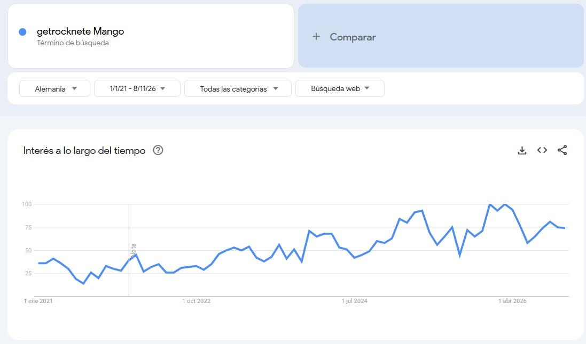

Inicio / Alemania / Cultura y cliente
ALEMANIA · CULTURA, CLIENTE Y SEÑALES DIGITALES
Cultura, cliente y señales digitales
El comprador alemán decide con datos, reglas claras y certificados. El colombiano negocia con confianza y relaciones. Por eso llegamos con fichas técnicas, plazos exactos y sellos que se puedan verificar.
Hofstede: Colombia frente a Alemania
El modelo de Hofstede compara los países en seis dimensiones. Estos son los puntajes de Colombia y Alemania y lo que implican al negociar.
| Dimensión | Colombia | Alemania | Qué significa para negociar y vender |
|---|---|---|---|
| Distancia al poder | 67 | 35 | El comprador alemán decide con autonomía. |
| Individualismo | 13 | 67 | Valora los resultados y el cumplimiento, no la cercanía personal. |
| Motivación por el logro | 64 | 66 | Los dos valoran el desempeño y que se hable de calidad medible. |
| Evitación de la incertidumbre | 80 | 65 | Los dos prefieren reglas claras. En Alemania eso se traduce en contratos y especificaciones por escrito. |
| Orientación a largo plazo | 13 | 83 | Alemania piensa en relaciones comerciales de años y Colombia en el corto plazo (contratos anuales). |
| Indulgencia | 83 | 40 | Los alemanes se dan pocos gustos, así que el mango se vende mejor como snack sano y natural. |
Fuente: The Culture Factor, Country Comparison. Los puntajes son relativos y son promedios nacionales, no describen a cada persona.
PLANTILLA 5
Cultura aplicada
Cada diferencia cultural la convertimos en una acción concreta de negociación o de marketing, para no quedarnos en estereotipos.
| Hallazgo | Colombia | Destino (Alemania) | Diferencia relevante | Acción concreta |
|---|---|---|---|---|
| Hofstede 1: orientación a largo plazo | 13 | 83 | 70 puntos: Alemania planea a años. | Ofrecer contrato anual con volumen y precio pactados, y un plan de abastecimiento de 12 meses. |
| Hofstede 2: individualismo | 13 | 67 | 54 puntos: decide por resultados, no por relación. | Llevar ficha técnica, análisis de laboratorio y certificados a la primera reunión. Nada de «confíe en nosotros». |
| Hofstede 3: indulgencia | 83 | 40 | 43 puntos: consumo más racional. | Mensaje de empaque: «natural, sin azúcar añadida, fuente de fibra», no «antojo» ni «placer culpable». |
| Lewis | Multi-activo | Lineal-activo | Puntualidad y agenda frente a flexibilidad. | Mandar la agenda por correo 48 h antes, hacer reuniones de 45 min, responder correos en menos de 24 h y nunca mover una fecha de entrega. |
| Contraste sectorial | Se vende por sabor y origen | Se compra por certificado y trazabilidad (IFS, Bio, Fairtrade) | La confianza se gana con sellos, no con historia. | Mostrar primero los sellos y la trazabilidad (código QR por lote). La historia del productor colombiano va después, como valor agregado. |
Modelo de Lewis
| País | Tipo | Cómo negocia | Acción |
|---|---|---|---|
| Alemania | Lineal-activo | Agenda, puntualidad y datos | Presentar ficha técnica, certificados y cronograma. |
| Colombia | Multi-activo | Relación, conversación y flexibilidad con el tiempo | Controlar la tendencia a extender la reunión y cambiar fechas. |
Fuente: Richard Lewis Communications.
World Values Survey
En el mapa cultural de Inglehart-Welzel, Alemania está en el grupo de valores seculares-racionales y de autoexpresión (Europa protestante). Colombia está en el de valores más tradicionales (América Latina). Lo usamos como complemento para no depender de un solo modelo cultural.
Señales digitales
| Fuente | Dato | Uso / límite |
|---|---|---|
| DataReportal, Digital 2027: Germany (2026) | 79,9 millones de usuarios de internet (95,5 %) y 68,8 millones de identidades en redes sociales (82,3 %). | Casi todo el público objetivo está en línea. |
Google Trends: «getrocknete Mango» en Alemania

Cómo lo leemos: El interés de los alemanes por el mango deshidratado ha crecido de forma constante en cinco años: pasó de unos 30 puntos en 2021 a cerca de 75 en 2026. Además tiene temporada. Las búsquedas suben entre diciembre y febrero, con el máximo de 100 en el cambio de 2025 a 2026, y bajan a mitad de año, cuando hay más fruta fresca. Para nosotros eso confirma que la demanda va en aumento y que los envíos tienen que llegar a Alemania entre octubre y noviembre para aprovechar el pico de invierno. Google Trends mide interés relativo de búsqueda, no el tamaño del mercado.
Perfil del cliente
| Campo | Alemania |
|---|---|
| Perfil | 25 a 45 años, urbano, ingresos medios-altos |
| Ciudades | Berlín, Hamburgo, Múnich y Colonia |
| Dónde compra | Droguerías (dm, Rossmann), supermercados con línea bio (REWE, EDEKA), tiendas especializadas y online |
| Qué lo convence | «ohne Zuckerzusatz» (sin azúcar añadida), sello Bio de la UE y transparencia de origen |